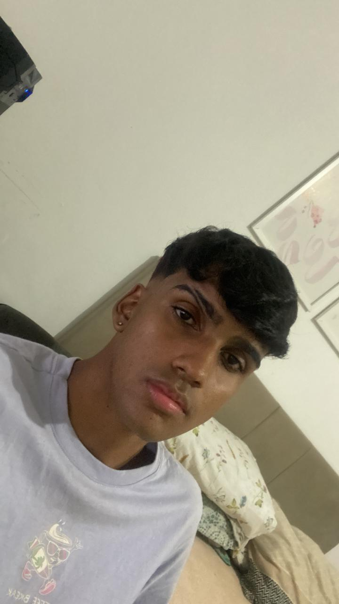
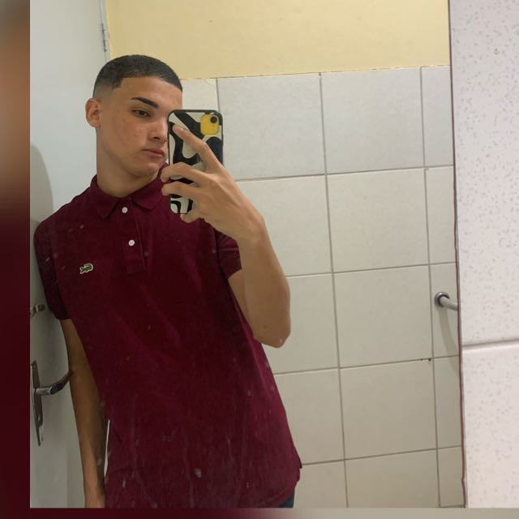
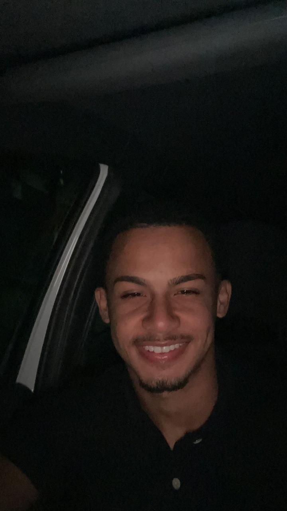

Sobre nosso grupo
Sergio Freitas

Um pouco sobre mim: Tenho 19 anos, e sempre gostei da área de tecnologia, tanto que agora curso ADS na uninassau das graças e atualmente estou no 2° Período. Além disso, sou apaixonado por futebol, e também gosto muito de jogar no computador com meus amigos.
Competências: Sou extremamente proativo, estou sempre disposto a aprender coisas novas e além de tudo sou bastante dedicado e compromissado.
Experiências Profissionais: Nenhuma experiência profissional até agora.
Escolaridade: Ensino médio completo e cursando ensino superior.
André Guilherme

Um pouco sobre mim: Estou cursando ADS por que eu gosto muito de tecnologia e é uma área que eu me identifico bastante. Também gosto muito de jogar futebol e jogar no PC.
Competências: Sei trabalhar em equipe, sou proativo e tenho rapida aprendizagem e adptação.
Experiências Profissionais: Não tenho nenhuma experiência profissional até o momento.
Escolaridade: Ensino médio completo e cursando ensino superior.
Julia Fonseca
Um pouco sobre mim: Tenho 18 anos, sou apaixonada pela a tecnologia e sempre desejei fazer parte dessa área durante toda minha vida. Gosto muito de ter meus amigos por perto, de sair e de ir pra academia.
Competências: Organizada, proativa, profissional, focada e sei trabalhar em equipe.
Experiências Profissionais: Jovem Aprendiz no setor de sistema de informação
Escolaridade: Ensino médio completo e cursando ensino superior.
Carlos Eduardo

Um pouco sobre mim: Estou entrando em uma área que não imaginava que estaria, mas pretendo passar essa novo desafio em minha vida.
Competências: Organização, proatividade, observador, fácil aprendizagem, escuta ativa.
Experiências Profissionais:A procura da minha primeira experiência.
Escolaridade: Ensino médio completo e cursando ensino superior.